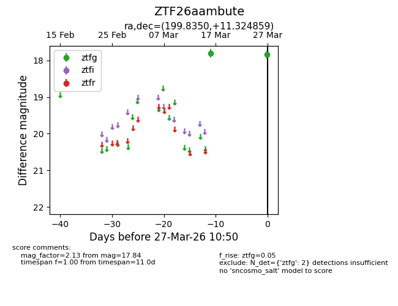
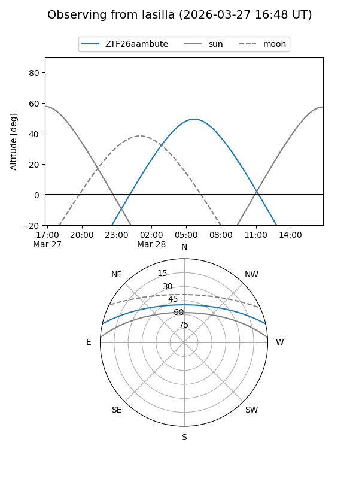
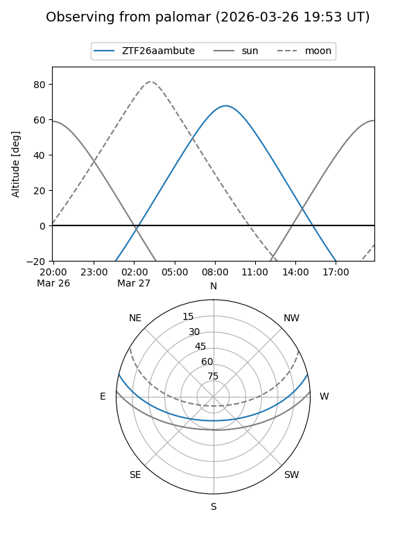

ZTF26aambute
Target ZTF26aambute at 2026-03-27 10:53
Aliases and brokers:
FINK: link
Lasair: link
ALeRCE: link
alt names
ZTF26aambute (ztf,fink_ztf)
Coordinates:
equatorial (ra, dec) = 199.8350,+11.32486
equatorial (HMS+DMS) = 13:19:20.39,+11:19:29.49
galactic (l, b) = (326.8076,+72.89019)
Flags:
Photometry:
last ztfg=17.84
2 ztfg detections
Lightcurve

Visibility


Additional plots